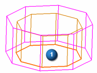

Mesh the payload footprint
 Simulation Navigator
Simulation Navigator
-

 Polygon Geometry (expand)
Polygon Geometry (expand)
-
Deselect the node for the lower walls polygon body.
-
Select the node for the payload polygon body.
 2D Mesh (Advanced Simulation toolbar, Mesh Drop-down list)
2D Mesh (Advanced Simulation toolbar, Mesh Drop-down list)
-
 the payload footprint face
the payload footprint face

The dialog box settings should remain as you set them for the previous 2D meshes.
-
Apply
Leave the 2D Mesh dialog box open for the next step.